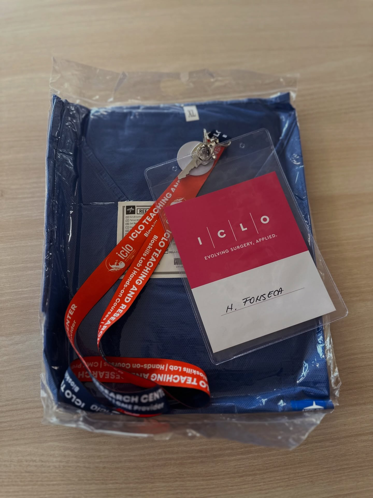
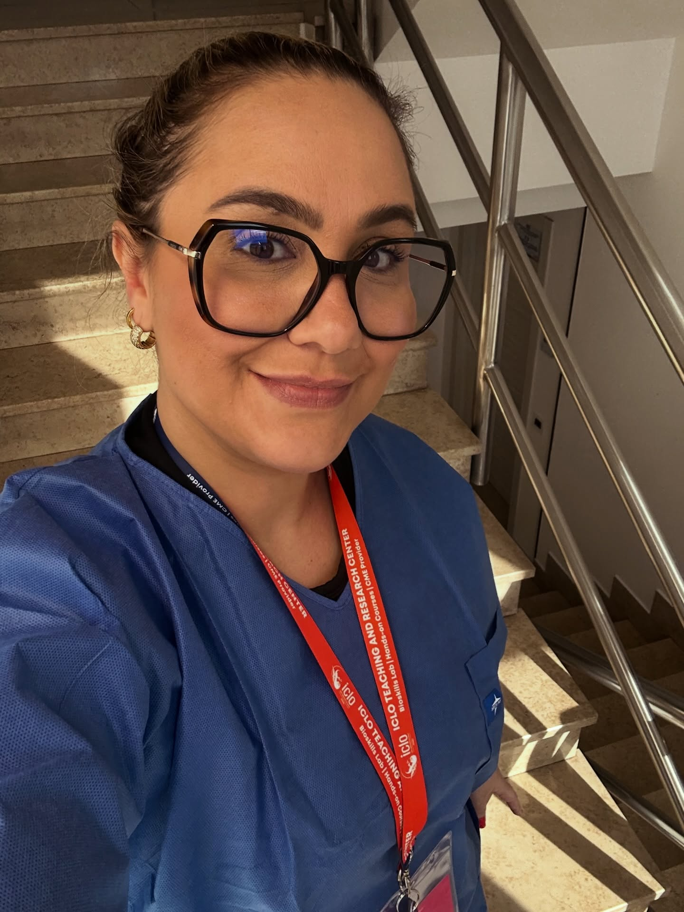
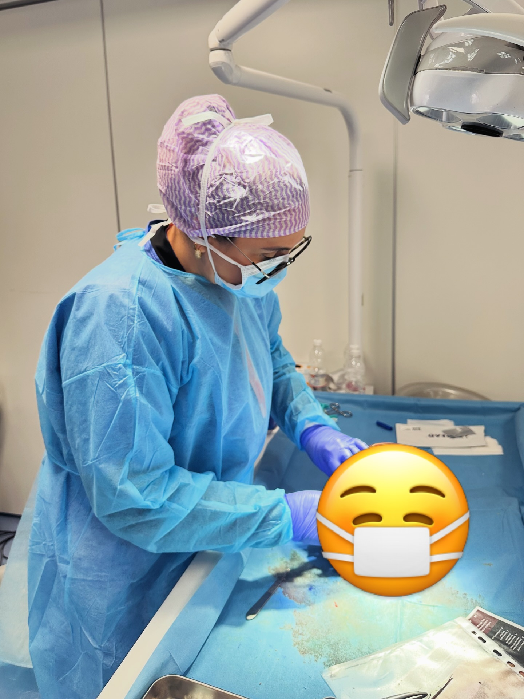
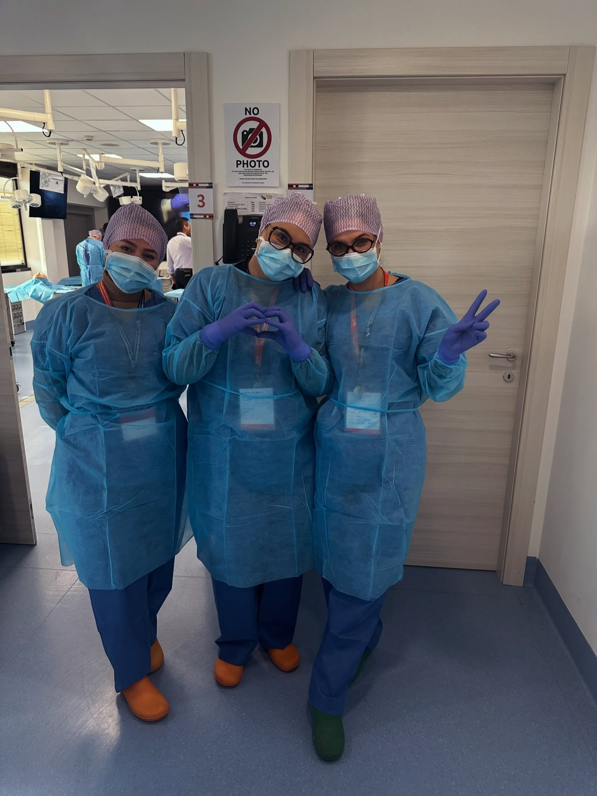

Harmonização facial não é sobre mudar quem você é. É sobre suavizar excessos, restaurar volumes e devolver a sofisticação da sua beleza com embasamento anatômico profundo.
Especialista em Harmonização & Estética Facial Avançada
Com formação técnica aprofundada em anatomia cirúrgica da face, a Dra. Natália Fonseca desenvolve planos de tratamento exclusivos para cada biotipo facial. O objetivo nunca é a transformação artificial, mas sim realçar seus traços mais nobres.
Protocolos personalizados realizados em ambiente clínico seguro e acolhedor em Paraíso do Tocantins.
Alinhamento estético do contorno mandibular, queixo, malar e proporções faciais com ácido hialurônico de alta tecnologia, respeitando sua anatomia original.
Prevenção e atenuação de rugas de expressão na testa, glabela e pés de galinha, mantendo a expressividade leve e descansada do olhar.
Tratamento de rejuvenescimento celular profundo para combater a flacidez e recuperar a firmeza e o viço juvenil da derme.
Definição de contorno, hidratação profunda e projeção sutil para lábios harmônicos, simétricos e com toque aveludado.
Correção de pequenas imperfeições no dorso e refinamento da ponta nasal sem necessidade de cirurgia invasiva.
Alinhamento do sorriso integrado à estética facial completa, garantindo oclusão perfeita e harmonia entre lábios e dentes.
Acompanhe o padrão de atendimento e os registros oficiais compartilhados no Instagram.




Agende sua consulta inicial para uma análise facial computadorizada e personalizada diretamente com a Dra. Natália Fonseca.